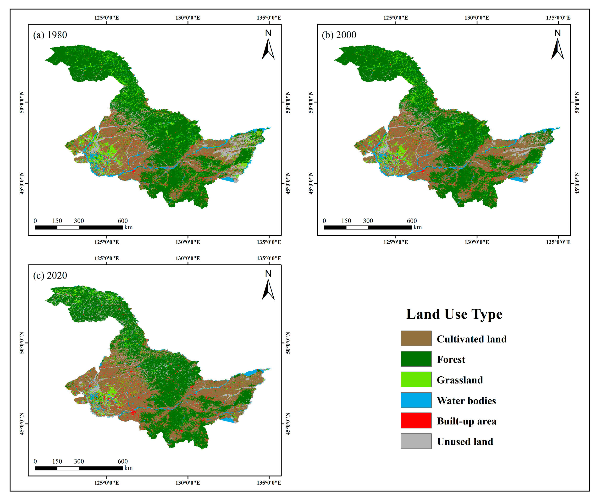
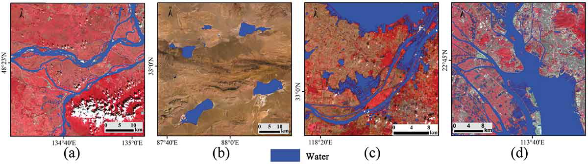

4 Week4—Urban policy
4.1 Summary
The city I chose is Harbin, which is in the most northern province in China. As we all know, China’s main productive force is the primary industry. Harbin has unique geographical advantages. Its land is black soil and is known as the “Granary of China.” In the early years of the founding of the People’s Republic of China, heavy industry was also vigorously developed in Harbin. The region’s rich oil resources were once known as the “cradle of socialist industrial construction.”
It is precisely due to excessive mining and crop planting that Harbin’s soil fertility has declined, and the land has even become desertified. Coupled with the development of heavy industry, rivers have become seriously polluted and the land has become salinized. In the past decade, China’s industrial structure has gradually shifted from heavy industry to light industry and high-tech. Heilongjiang Province’s per capita GDP has shown a rapid downward trend, and young people have gradually left their hometowns to work in big cities, resulting in a serious aging of the population in Harbin. Industrial transformation is also tending in an awkward situation.
Therefore, there is a very sad saying among local university students: “For our generation, the purpose of studying is to leaving.”
In order to respond to the “Several Opinions of the Central Committee of the Communist Party of China and the State Council on Comprehensively Revitalizing Old Industrial Bases such as Northeast China” and revitalize Heilongjiang, the picture below shows remote sensing data of land use changes in Heilongjiang Province from 1980 to 2020.
4.2 Applications
The main data used in this map are meteorological data, digital elevation model data (DEM) and land use data.
The reduction of unused land and forest areas, as well as the harvesting, use, and reclamation of forest land—such as converting farmland back to forest and afforestation—are plainly visible on the remote sensing-produced map above(Jiang et al.,2023). The development of Heilongjiang has been impeded by improper land usage, which has intensified environmental risks.
The picture below is a water body map of four provinces extracted through MLP neural network based on Landsat8. It can be observed that the rivers in Harbin are distributed in a strip shape and are long and narrow. Therefore, once the water body is polluted, its self-purification ability will be very poor, and it will be difficult to restore the water body. Pollution from heavy industry requires a lot of time for rivers to recover, and efforts should be made to avoid industrial re-pollution of water.

Based on the problems displayed by these maps, we can give some preliminary improvement methods. The first is to further return farmland to forest to avoid further weakening and erosion of black soil.
Secondly, because Heilongjiang has a strong initial industrial accumulation, it can consider industrial transformation from heavy industry to light import and export industry. Harbin is near Russia in the north and the Sea of Japan and the Yellow Sea in the east, making import, export and transportation more convenient.
It is worth noting that Harbin is also very suitable for developing tourism. Due to Harbin’s high latitude, the outdoor temperature in winter can reach more than 20 degrees below zero. This year, the Heilongjiang Provincial Tourism Bureau has begun to vigorously promote Harbin’s “Ice and Snow World” project, which is to build large-scale ice sculptures and ice sculpture amusement facilities. According to a report from Time Weekly, from January 1 to 3, 2024, tourism revenue of nearly 6 billion yuan was achieved. This amazing rate of return makes it worthwhile for the Tourism Bureau to continue to improve tourism-related supporting facilities and promote the further development of its tourism industry.
4.3 Reflection
The processing of remote sensing technology can very intuitively see the land resources and changes in the study area, which is very helpful for us to analyze land utilization. These studies can identify areas and directions for improvement. Regarding the choice of region, I think Harbin in China is a very typical region (similar e.g. Detroit in the United States). The recovery of soil erosion and water pollution caused by heavy industry is a long-term process, but it must also be Make full use of its accumulated resources, because economy is the most important factor affecting a region, and the income from other industries can be invested in improving the natural environment.
4.4 Reference
Jiang, N., Yao, F., Liu, T., Chen, Z., Hu, C. and Geng, X. (2023). ‘Estimating the Soil Erosion Response to Land-Use Change Using GIS-Based RUSLE and Remote Sensing: A Case Study of Heilongjiang Province, China’. Sustainability. Multidisciplinary Digital Publishing Institute, 15 (10), p. 8004. doi: 10.3390/su15108004.
Jiang, W., He, G., Pang, Z., Guo, H., Long, T. and Ni, Y. (2020). ‘Surface water map of China for 2015 (SWMC-2015) derived from Landsat 8 satellite imagery’. Remote Sensing Letters. Taylor & Francis, 11 (3), pp. 265–273. doi: 10.1080/2150704X.2019.1708501.